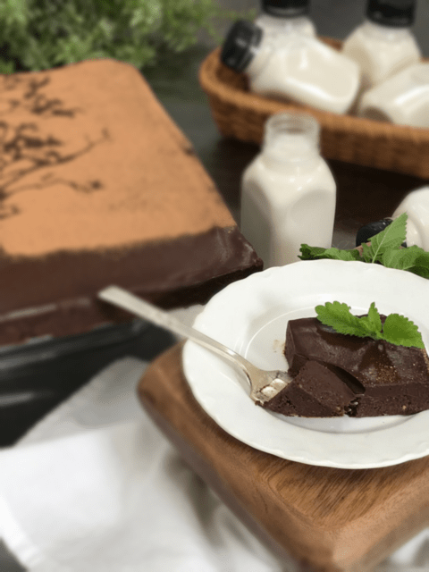

Cracked Black Pepper and Cayenne Brownies
 Do any of you have hobbies that end up being a full-time job with just organizing your supplies? I have been a crafter since my early teens, and I can’t even begin to tell you the amount of time I have spent just organizing all my little do-dads. I think I have a degree in it.
Do any of you have hobbies that end up being a full-time job with just organizing your supplies? I have been a crafter since my early teens, and I can’t even begin to tell you the amount of time I have spent just organizing all my little do-dads. I think I have a degree in it.
These organizational skills that I inherited formed early on because I had to be creative with my workspace, or lack of. Mom and I never had a separate room that could be dedicated to crafts, so we snagged any bit of real-estate that we could find in all the different places we lived.
We mastered the art of turning closets and laundry rooms into art studios. But it took some mighty brainstorming to make everything fit, accessible, and of course, look pretty.
The most significant space we had for a while was the walk-in closet in mom and dad’s room. That was heaven. It felt like a mansion since we had upgraded from a standard, folding door closet. That was tough. Two of us sitting side by side in folding chairs, a long table in front of us that we had pieced together with lord knows what… facing the closet wall (which was a piece of art within itself.)
Spools of ribbon, lace, tins hanging with scissors, hot glue sticks, and oh so much more. :) It was so tiny that it got comical. A typical session in our “art studio” went something like this…
“Mom, pass me the scissors, please.” She moved it an inch. “Here.” “Thanks, mom.”
“Mom, pass me the batting, please.” With her foot, she pushed it from under the table from her side to mine. “There you go, sweetie.” “Thanks, mom.”
“Amie Sue, pass me that lace, please.” I moved it six inches over to her. “There you go, mom.” “Thanks.”
“Grumble, grumble, grumble… Is it hot in here to you?” “Shew, yes, I thought it was just me.”
“Grumble, grumble, grumble… pew… did you just… please don’t tell me… YOU DID!!! I can’t believe you did that in “here”… OMG, I am melting. I can’t see straight! We gotta get out of here!”
“Wanna go get a Big Gulp?” ….. “YES, I’m buying!”
Shew, I gotta say, I am sitting here laughing out loud as I share this. What a “trip” down memory lane. I must have needed that giggle. Anyway, I REALLY got off track here. In my twenties and thirties, mom and I picked up scrapbooking. And if any of you out there dabble in the art of scrapbooking, you know first hand as to what I am sharing here. Of all the art/craft form mediums that I ever got into, scrapbooking turned into nothing but organizing all the tiny, itty bitty parts and pieces that a person needed. If you didn’t, you couldn’t ever find or even remember what you had on hand.
By the time you were done organizing and oohing and aahing over something you bought a year ago but forgot you had… you were too tuckered out to work on the actual project. So, really, I shared all of this because last week when I was at the craft store, I found myself down the scrapbooking aisle. I was practicing great willpower… NO more supplies!! No more supplies… That was until I saw the tree stencil that I had to have, not for scrapbooking but cake decorating! So, that’s my story, and I am sticking to it! That my friend is where my inspiration came from. The end, end of story.

Ingredients:
(I doubled this recipe to make a 12×12″ pan)
Brownie:
- 2 cups (349 g) packed Medjool dates, pitted
- 2 cups (185 g) raw walnuts, soaked & dehydrated
- 1/2 cup (40 g) cacao powder
- 1/4 cup (46 g) mesquite powder
- 1/2 tsp (4 g) Himalayan sea salt
- 2 tsp (5 g) black pepper
- 1 tsp(2 g) cayenne pepper
Ganache topping:
Preparation:
Brownie:
- Dates – If the dates are tough and more on the dry side, cover with enough hot water to rehydrate them for ten minutes.
- Once ready to use, discard the soak water and hand-squeeze the excess water out before adding to the recipe.
- In a food processor, fitted with the “S” blade, place the walnuts, cacao, mesquite, salt, black pepper, and cayenne. Pulse together at first, then process until the walnuts are broken down into small crumbles.
- They won’t grind down to powder due to the natural oils in them.
- Be careful that you don’t overprocess and start making walnut butter.
- Remove the lid and lay the dates around the bowl of the food processor.
- Return the lid and process until the dough starts to clump together in a ball.
- If you double the batch, you will need a large food processor that runs at a reasonable speed.
- Line the baking pan with plastic wrap or wax paper.
- Press the brownie batter down firmly but evenly. I used a large spatula to smooth out the surface.
- If the dough is sticky, dip the spatula in water.
- Set aside while you make the ganache.
Ganache:
- Make the ganache and pour it into the center of the brownies.
- Spread out gently and evenly covering the brownies from one edge to the others.
- If you doubled the brownie batter, you would need to double the ganache as well.
- Place in the freezer to firm up the ganache.
- Enjoy as-is or decorate.
My decorating:
- After the ganache chilled and was “dry” to touch, I laid the stencil on top of the ganache. If the ganache is tacky and sticky, place back in the fridge to firm up. You don’t want the stencil sticking to it.
- Once in place, dust the top with raw cacao powder. Be sure to use a thick enough coat to cover the edges of the stencil.
- Gently remove the stencil, sit back, admire your work… and dig in!
© AmieSue.com